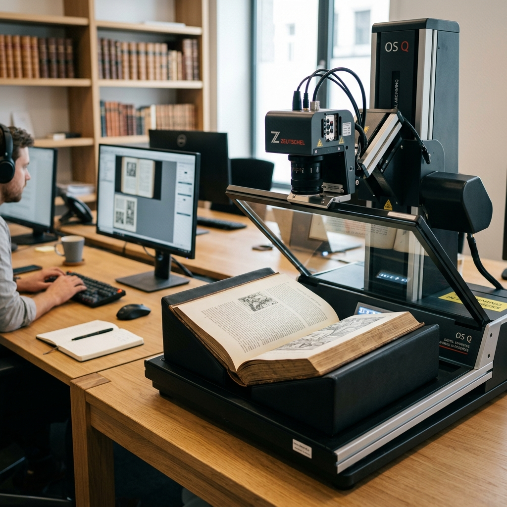
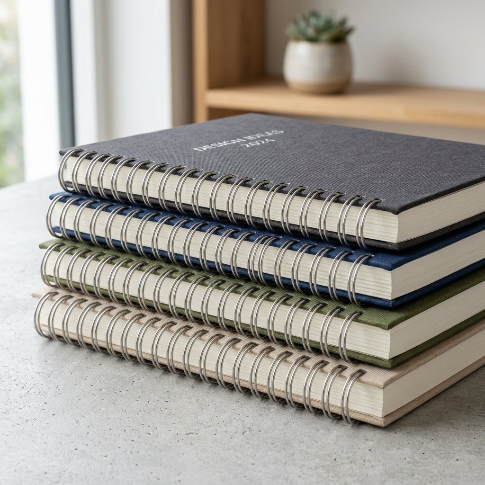
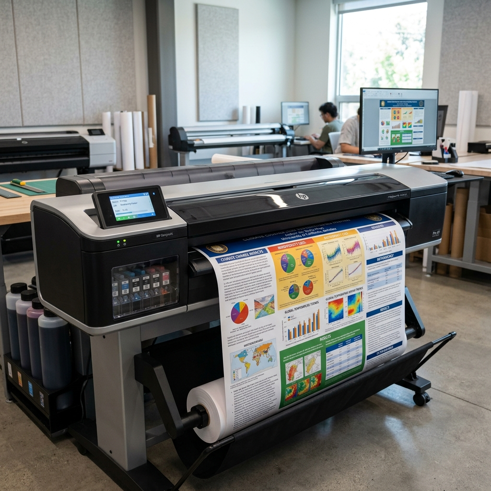
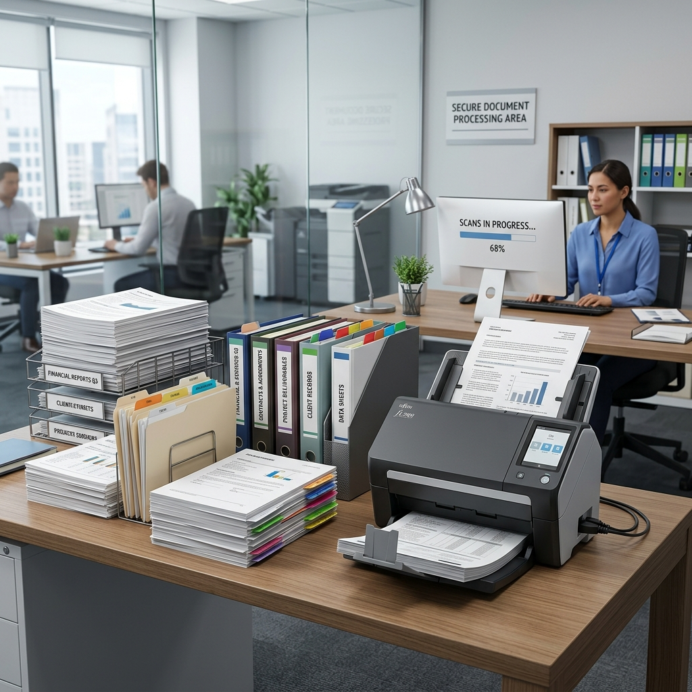

무거운 전공책, 10분 만에 아이패드 속으로!
왕십리 1등 셀프 북스캔 매장
낱장 한 장부터 대형 포스터까지, 종이에 관한 모든 해결책
초고속 스캐너와 전문가의 깔끔한 재단/제본으로 스터디 효율을 극대화하세요. 저작권법을 완벽히 준수하는 안전한 셀프 북스캔 공간, 스캔데이입니다.

무거운 전공책부터 대형 포스터까지,
스캔데이가 한 번에 해결해 드립니다.
안녕하세요, 왕십리역 앞 가장 든든한 작업 공간 스캔데이 왕십리점입니다.
저희는 학생들이 무거운 가방 대신 가벼운 아이패드로 더 편하게 공부할 수 있는 방법을 고민합니다. 단순히 기계만 빌려드리는 것이 아니라, 1mm의 오차 없는 정밀 재단부터 눈이 편안한 고해상도 스캔까지 여러분의 소중한 자료를 가장 깔끔하게 디지털로 옮겨드립니다.
낱장 서류 한 장부터 수천 페이지의 전공 서적, 그리고 시원하게 뽑아야 하는 A1·A2 대형 출력까지. 종이에 관한 고민이라면 무엇이든 스캔데이에서 한 번에 해결하세요. 복잡하고 번거로운 작업은 저희가 도와드릴 테니, 여러분은 오직 공부에만 집중하세요!
북스캔 & OCR: 전공책을 검색 가능한 스마트 PDF로 변환 (10분 완성)
분철 & 제본: 튼튼하고 잘 펼쳐지는 프리미엄 스프링 제본
대형 출력: 학술 포스터와 도면도 선명하게 바로 출력
문서 관리: 낱장 서류부터 대량 문서 스캔까지 완벽 대응
"가방은 가볍게, 공부는 스마트하게. 스캔데이가 함께합니다."
왜 스마트한 학습자들은 스캔데이를 선택할까요?
단순한 스캔을 넘어, 완벽한 디지털 학습 환경을 제공합니다.
검색 가능한 PDF (고성능 OCR)
수천 페이지의 전공책에서 원하는 키워드를 1초 만에 찾아보세요. 아이패드 공부의 질이 달라집니다.
Best for iPad1mm의 오차 없는 정밀 재단
소중한 책이 상하지 않도록 전문가가 직접 정밀 커팅기로 작업합니다. 재단 단면이 매끄러워 스캔 품질이 극대화됩니다.
10분 완성 & 현장 즉시 지원
기계만 빌려드리지 않습니다. 전문가가 옆에서 바로 도와드려 초보자도 10분 만에 완벽하게 작업을 마칠 수 있습니다.
Expert SupportA1·A2 대형 포스터 출력
학술 발표용 포스터부터 설계 도면까지, 선명한 고해상도 대형 출력이 매장에서 즉시 가능합니다.
북스캔 스캔과정
전문가의 손길과 최신 장비로 완성되는 완벽한 북스캔 프로세스
정밀 재단 (필수)
전문가가 책의 등 부분을 1mm 오차 없이 깔끔하게 커팅하여 스캔 준비를 마칩니다.
✨ 스캔을 위한 가장 첫 번째 필수 단계입니다!
초고속 셀프 스캔
고성능 스캐너로 수백 페이지의 책도 10분 내외로 고해상도 PDF 변환을 완료합니다.
기기 고장 방지를 위해 반드시 미리 제거해 주세요!
스프링 제본 및 복원
스캔이 끝난 책을 프리미엄 스프링으로 튼튼하게 묶어 다시 새 책처럼 만들어 드립니다.
📖 이전보다 더 편하게 넘겨볼 수 있는 새 책으로 복원!
왕십리역 도보 5분,
가장 빠르고 쾌적한 북스캔 공간

스캔데이가 제공하는 완벽한 서비스

북스캔 & OCR (문자인식)
전공책을 굿노트/노타빌리티에서 검색 가능한 스마트 PDF로 변환합니다. 아이패드 학습 효율을 200% 극대화하세요.

분철 & 제본
튼튼하고 잘 펼쳐지는 프리미엄 스프링 제본으로 책의 휴대성과 내구성을 높여드립니다.

대형 출력
학술 포스터, 설계 도면 등 일반 프린터로 불가능한 대형 사이즈도 선명하게 바로 출력합니다.

문서 관리
낱장 서류부터 대량 문서 스캔까지, 비즈니스 및 개인 자료를 완벽하게 디지털로 보관해드립니다.
투명하고 합리적인 스캔데이 요금표
| 🟡 북스캔 및 제본 | |
| 셀프 북스캔 (30분) | 6,000원 |
| 제본 (스프링) 및 분철 | 3,000원 |
| 책 재단 (커팅) | 1,000원 |
| 문서 스캔 / 낱장 스캔 | 변동 (매장 문의) |
| OCR 문자인식 (100페이지당) | 500원 |
| 🔴 대형 출력 | |
| 백상지 A2 사이즈 | 7,000원 |
| 백상지 A1 사이즈 | 13,000원 |
| 포스터 용지 A2 사이즈 | 14,000원 |
| 포스터 용지 A1 사이즈 | 26,000원 |
| 그 외 사이즈 | 변동 |
| 🔵 일반 인쇄 | |
| 흑백 인쇄 | 50원 |
| 컬러 인쇄 (잉크젯) | 100원 |
| 컬러 인쇄 (레이저) | 250원 |
| A3 흑백 인쇄 | 100원 |
| A3 컬러 인쇄 (잉크젯) | 200원 |
| A3 컬러 인쇄 (레이저) | 500원 |
* 가격은 매장 상황에 따라 변동될 수 있습니다.
📅 월-일 모두 오픈! 간편한 네이버 예약
스캔데이는 공휴일을 제외한 월화수목금토일 모두 고객님을 위해 열려 있습니다.
소중한 대기 시간을 최소화하기 위해 우선 예약제를 권장하고 있습니다.
예약 없이 방문하셔도 현장에서 바로 접수 및 이용이 가능합니다.
(평일 10:00-20:00 / 주말 11:00-18:00 운영)
시간 선택
방문을 원하는 날짜와 시간을 선택해 주세요.
서비스 선택
셀프 북스캔, 재단, 제본 등 필요한 서비스를 선택합니다.
권수 입력
스캔하실 책이 총 몇 권인지 적어주세요.
추가 옵션
스프링 제본(복원) 여부를 선택하시면 정확한 안내를 받으실 수 있습니다.
예약 후 매장에서 상세한 안내를 도와드립니다
자주 묻는 질문
스캔데이 이용 전 궁금한 점을 확인해 보세요.